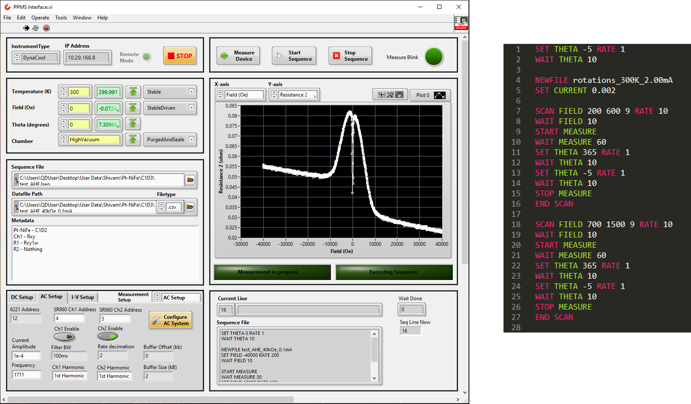

Overview
The Physical Property Measurement System (PPMS) from Quantum Design, Inc. is a highly versatile magnetic cryostat and a vital tool for labs working at the intersection of condensed matter physics and nanoelectronics. In our lab, we use the PPMS extensively for magneto-transport measurements on spintronic devices and for characterizing transport properties in superconducting systems. These electrical measurements are performed using a Keithley 6221 AC/DC current source in combination with a Keithley 2182A nanovoltmeter or SRS SR860 lock-in amplifiers.
Due to the nature of the experiments, which often involve frequent adjustments of environmental parameters such as magnetic field, temperature, sample rotation, and applied current, the measurements can span several days. To improve efficiency and reliability, automation of these long-duration experiments is essential. To address this, I developed a comprehensive LabVIEW program that automates the control of both the PPMS and external electronics. This program allows for the execution of complex measurement sequences based on predefined scripts, enabling precise and consistent data acquisition over extended periods.

Picture of the PPMS cabin at NCB lab. A close-up view of the external electronics is shown on the right.
LabVIEW-based PPMS Interface
- Allows real-time plotting of data during measurements
- Supports scripted sequences for long-duration experiments. Syntax description can be found here
- Compatible with AC/DC measurements like I-V and magneto-transport
Detailed documentation of the PPMS Interface is under development.
If you're someone who uses a PPMS and would like to try out my program for your experiments, please feel free to reach out! I would be happy to share the program and provide help in making modifications for your use. It would be a pleasure to see more people make use of the tool that I have so heartily developed.
Left: LabVIEW program developed for controlling the cryostat (temperature, magnetic field, sample rotation) and external electronics to run prolonged measurements.
Right: Example of a measurement sequence script, including loops (SCAN), that can be used for running long measurements without the need for continuous monitoring.